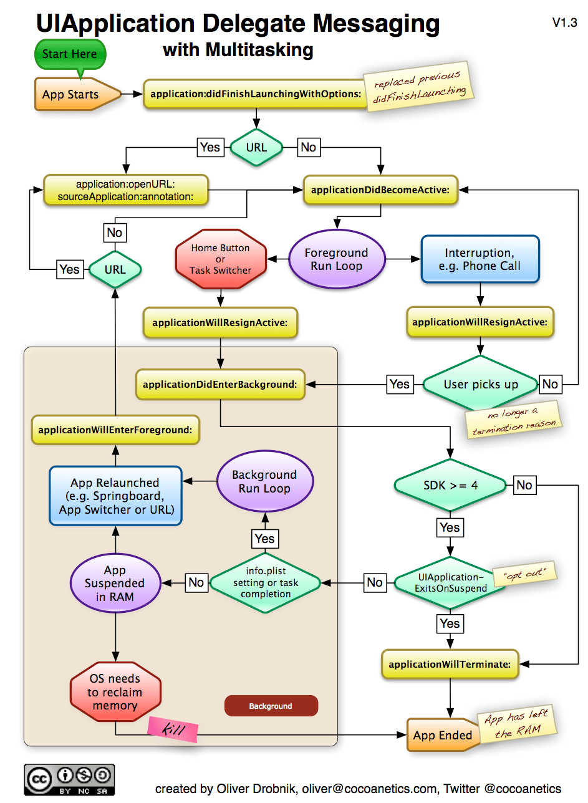

| 更新时间 | 更新内容 |
|---|---|
| 2013-04-17 | 发布 |
| 2017-06-12 | 删除iOS4及之前的单线程生命周期说明 |
参考Apple的官方文章：Strategies for Handling App State Transitions
App启动的时候，我们应该在application:didFinishLaunchingWithOptions:回调里：
在这个回调里的处理应该尽可能的轻量化，这样可以减少App的启动时间。如果5秒内App还没有成功进入接收消息的就绪状态，App将会被系统杀死。
applicationDidBecomeActive:会被触发，在这个回调触发之后我们就可以确认App是在前台运行了。
在一个基于alert的中断发生或者收到来电时，applicationWillResignActive:会被触发，在这回调里：
在用户取消了alert或者未接电话时，App会回到原先的active状态，触发applicationDidBecomeActive:回调，这时候我们应该做一些中断操作的反向操作。
其实在App任何情况下即将失去焦点时，最先都会调用applicationWillResignActive:。
而在App回到前台运行，在开始主线程Run Loop之前，必定会先触发applicationDidBecomeActive:。
注意：一定不要刻意等到App状态切换的时候再去保存用户数据，用户数据应该在更改后尽快的进行保存。
在App进入后台时，applicationDidEnterBackground:回调将被触发，这时我们可以：
applicationDidEnterBackground:返回之前，处理好你的App视图。记住大多数情况下可能需要强制执行一次绘图。和App启动一样，真的进入后台前你有5秒钟时间再处理各种事务，这个回调的处理也应该尽可能的轻量化，否则超时的话App一样会被系统干掉。
如果需要在后台进行一些较为耗时的处理，可以参照方法beginBackgroundTaskWithExpirationHandler:。
在应用再从后台准备回到前台时，最先触发的是对应的回调applicationWillEnterForeground:，在这个回调里我们应该进行各种进入后台操作的反向操作。
通常代表是导航和多媒体播放App，这些App在后台也是需要工作的。在Info.plsit文件里声明对应的权限，开启后台模式后，App在后台运行的时候仍然会运行一个Run Loop。
